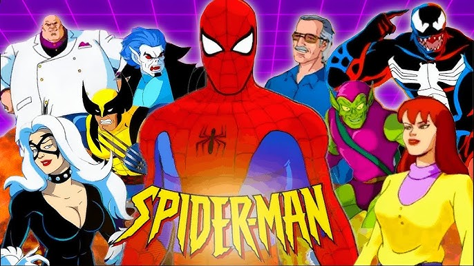
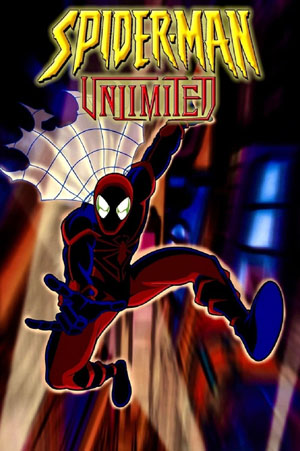
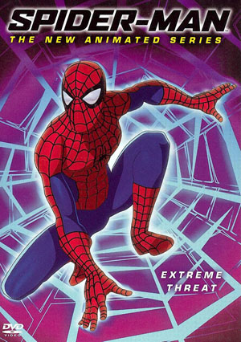
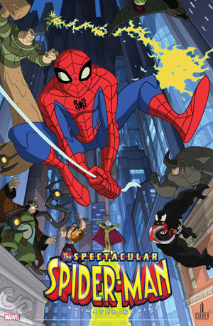
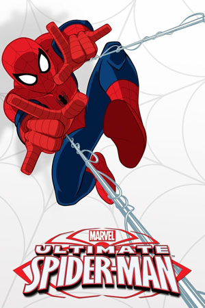
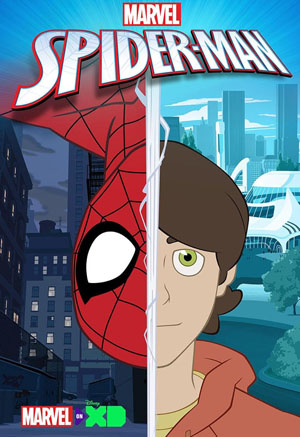

En 1994, una serie animada de Spider-Man fue hecha para la Fox Network, con Christopher Daniel Barnes proporcionando la voz del arácnido. La serie tuvo un presupuesto más grande y usó un sistema de novela de un largo arco argumental por temporada desarrollado por John Semper. Como un resultado cada uno de los 65 episodios individuales (comenzando con la temporada 2) fueron llamados "capítulos". Esta serie reflejaba más de cerca el cómic, ya que se centró en el conflicto personal que Peter Parker sintió como Spider-Man, en vez de suceder a las series de acción que la precedieron. Esta fue la serie más larga de Spider-Man con 65 episodios en cinco temporadas. Varios episodios se consolidaron en películas directamente a DVD, como Daredevil vs. Spider-Man.
En 1999, una serie animada llamada Spider-Man Unlimited fue desarrollada para Fox (que pretende ser una última temporada Universo Expandido de la serie de 1994) en el cual Spider-Man es transportado a un Counter-Earth animado inspirado por el creado por el Alto Evolucionador en los cómics de principios de la década de 1970. La serie fue cancelada después de una temporada. Spider-Man fue interpretado por Rino Romano.
En 2003, otra adaptación a televisión, Spider-Man: The New Animated Series esta vez usando animación por computadora, fue producida por Mainframe Entertainment para Sony Pictures Television y trasmitirse en MTV; contó con los personajes y la continuidad de la película de 2002 Spider-Man, así como el personaje Kingpin como se muestra en la película de 2003 Daredevil. Esta serie duró 13 episodios. Spider-Man contó con la voz de Neil Patrick Harris.
Esta serie de televisión fue una fusión de los primeros años de The Amazing Spider-Man y Ultimate Spider-Man de Brian Michael Bendis. Peter Parker es un adolescente viviendo en la Nueva York contemporánea, con en la versión Ultimate de Bendis, pero sale con su mejor amiga Gwen Stacy, como en los cómics originales de The Amazing Spider-Man, y Mary Jane Watson es "sólo una amiga" que no está interesada en salir con él, al menos no únicamente. Muchos de los personajes secundarios originales de Peter, incluyendo a Flash Thompson, han sido trasladados a términos modernos. Notablemente, al menos algunos de los exmiembros de los personajes secundarios de Parker son gente de color. Liz Allen es latina y Ned Lee es coreano. Esto refleja la tendencia en la línea Ultimate de Marvel de introducir más diversidad alterando personajes existentes (por ejemplo, Nick Fury es negro, Coloso es homosexual, etc.). La primera temporada sigue varios arcos argumentales diferentes conocidos para los antiguos lectores de Spider-Man: la creación de Venom y su compleja relación con Eddie Brock (alterado en la primera parte de la carrera de Spider-Man), su romance en ciernes con Gwen Stacy, y la primera aparición del Duende Verde. La primera y segunda temporadas de la serie fueron transmitidas, cada una con 13 episodios. Aunque exitosa, la serie terminó cuando Sony Pictures renunció a sus derechos para hacer proyectos animados usando a Spider-Man y a personajes asociados. Spider-Man fue interpretado por Josh Keaton.
Ver en Prime Video Ultimate Spider-Man se transmite por Disney XD. Comenzó a trasmitirse el 1 de abril de 2012. La voz de Spider-Man/Peter Parker fue prestada por Drake Bell. En la serie, Spider-Man rompe la cuarta pared, lo que generó polémica.
Tras la finalización de Ultimate Spider-Man y el éxito que tuvo el personaje en su llegada al Universo cinematográfico de Marvel, Disney dio de inmediato luz verde para una nueva serie animada de Spider-Man en 2017, esta vez usando los elementos clásicos que no habían sido ni mencionados tras la finalización de Spectacular Spider-Man. Robbie Daymond da su voz para el trepamuros.
Fuente:
WikipediaContacto:
MuruagaOtras Páginas de Spider-Man: